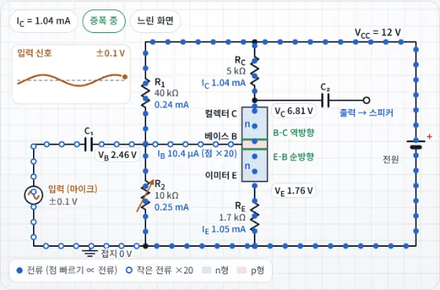
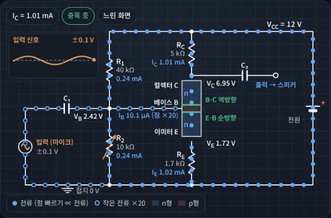
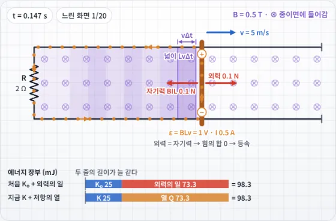
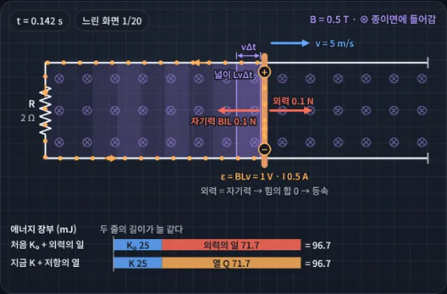
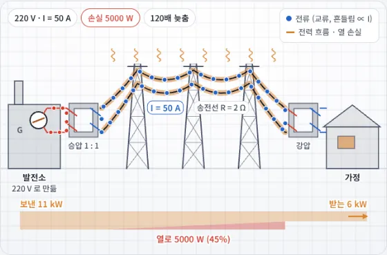
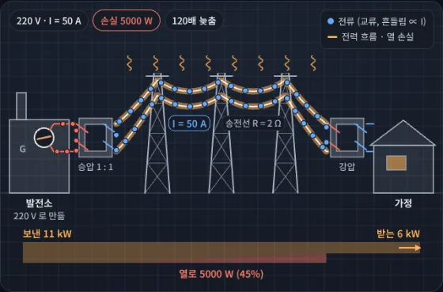
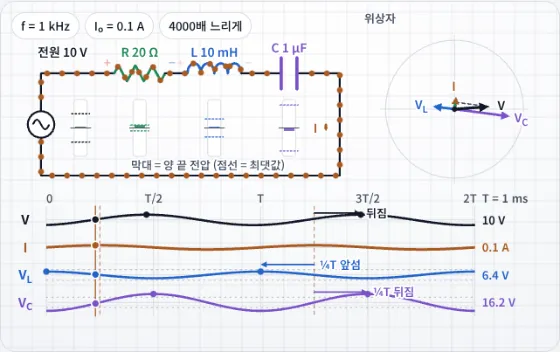
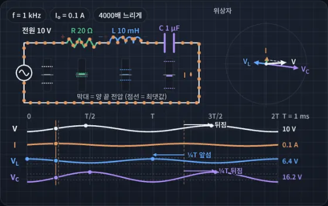

B2물리학Ⅱ · Ⅱ. 전자기장
저항·트랜지스터·자기장·전자기 유도
개념 14개 가운데 4개를 실험 페이지로 만들었어요. 순서대로 보면 단원의 흐름이 이어져요.
B2-01준비 중
전기 저항과 옴의 법칙
왜 도선이 길수록 저항이 크고, 굵을수록 저항이 작을까?
B2-02준비 중
직렬·병렬, 키르히호프 법칙과 회로 재구성
복잡한 회로도 결국 어떤 두 규칙으로 풀릴까?
B2-03준비 중
전기 에너지와 소비 전력
직렬에서는 저항이 큰 전구가, 병렬에서는 저항이 작은 전구가 밝은 이유는?
B2-04준비 중
반도체와 트랜지스터의 구조·작동 원리
얇은 베이스 하나가 어떻게 큰 컬렉터 전류를 만들어 낼까?
B2-05준비 중
트랜지스터의 증폭 작용과 스위칭 작용
트랜지스터는 에너지를 만들지 않는데 어떻게 신호를 키울까?
-


B2-06
바이어스 전압과 증폭 회로 설계
교류 신호를 그대로 베이스에 넣으면 왜 절반이 사라질까?
B2-07준비 중
자기장·자기력선과 전류의 자기 작용
자기력선은 왜 끊어지지 않고 닫힌 곡선이 될까?
B2-08준비 중
직선 전류의 자기장과 중첩
여러 도선의 자기장은 어떻게 더하고, 자기장이 0인 점은 어디에 생길까?
B2-09준비 중
원형 도선·솔레노이드·전자석
직선 도선을 둥글게 감으면 자기장은 어떻게 모일까?
B2-10준비 중
전자기 유도: 패러데이 법칙과 렌츠 법칙
유도 전류의 방향은 왜 항상 '변화를 방해하는' 쪽일까?
-


B2-11
움직이는 막대·회전 막대의 유도 기전력
레일 위를 미끄러지는 막대는 왜 전지처럼 행동할까?
B2-12준비 중
전자기 유도의 이용: 발전기·전기 기타
회전 코일의 선속이 최대인 순간에 왜 기전력은 0일까?
-


B2-13
상호 유도·자체 유도와 변압기, 그 이용
1차 전류가 클 때가 아니라 변할 때만 2차 전류가 흐르는 이유는?
-


B2-14
교류 회로와 RLC 공명
진동수를 바꾸면 저항·코일·축전기의 전류는 각각 어떻게 변할까?